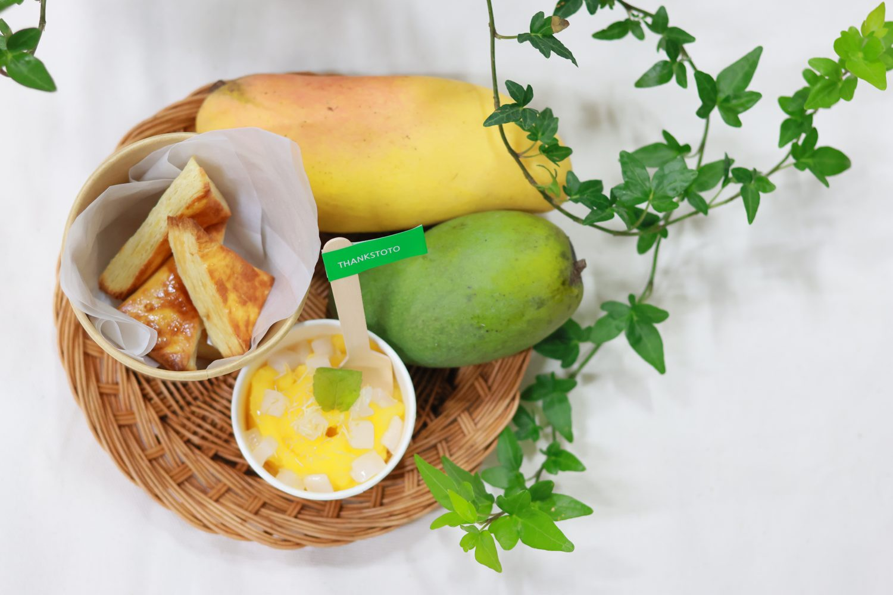
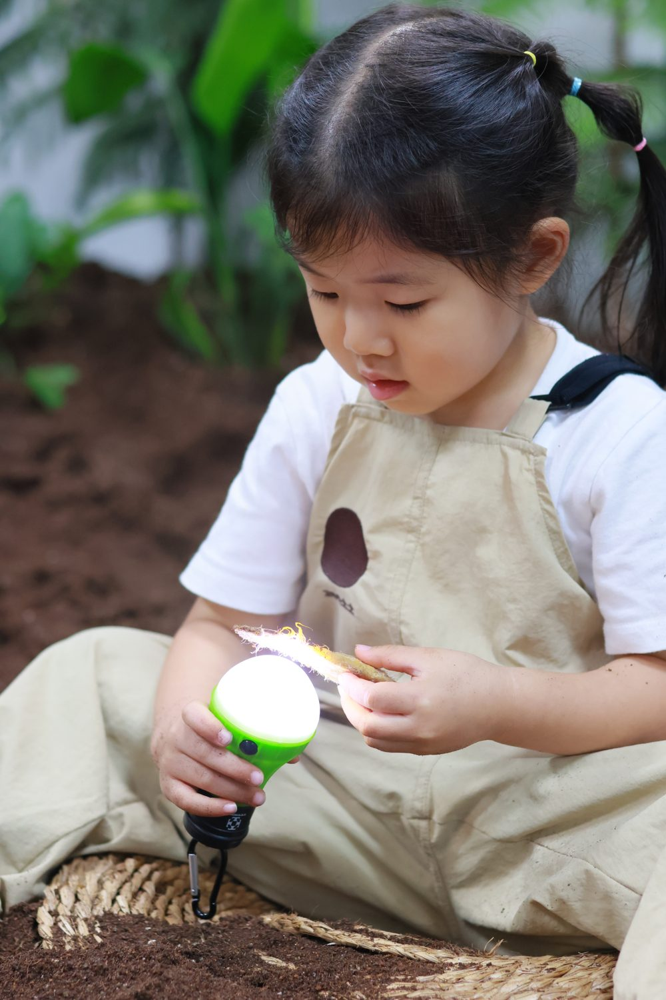
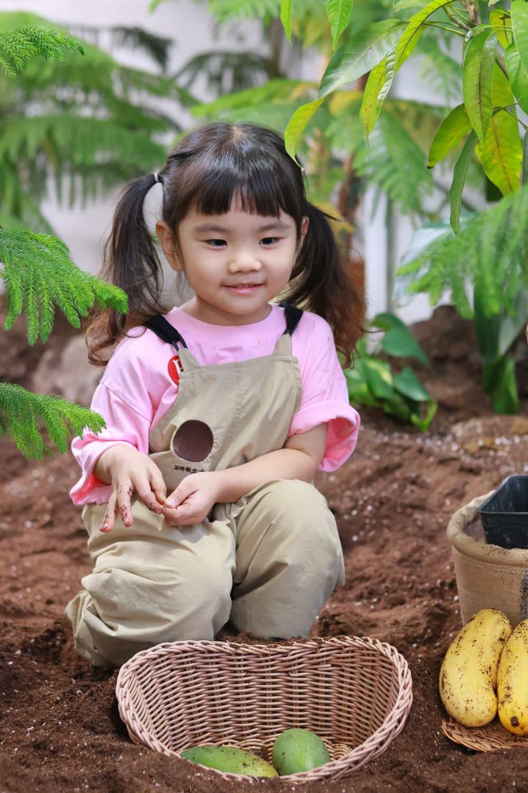
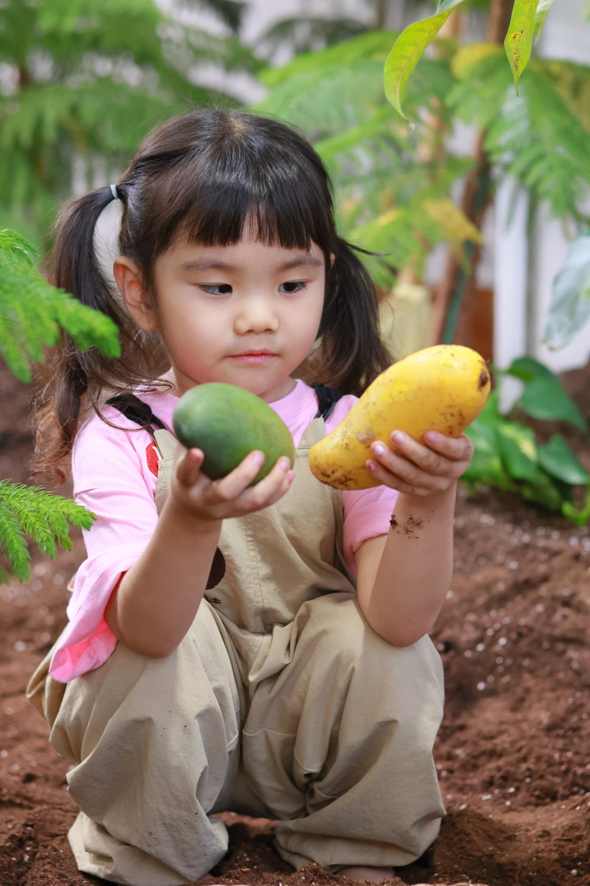
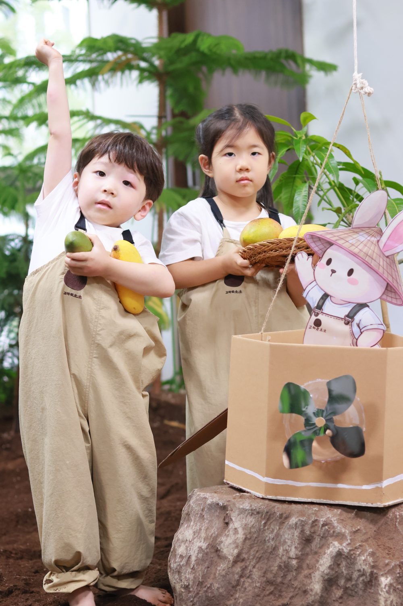
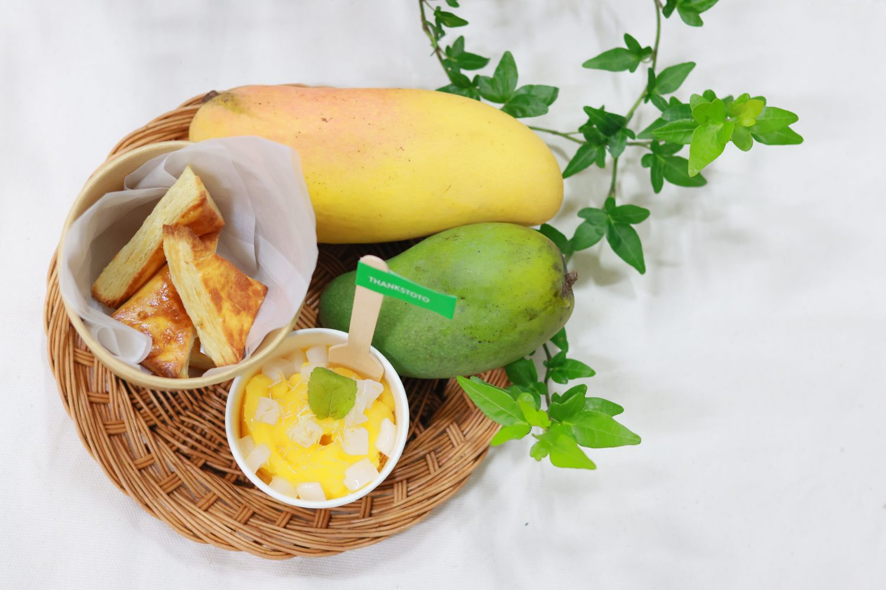

단단한 초록 망고가, 며칠을 기다리면
향긋한 노란 망고가 됩니다.
아이가 '기다림의 맛'을 처음 배우는 여름.
따뜻한 베트남에서 망고 씨앗이 비행기를 타고 왔어요. 아이들은 손전등으로 씨앗 속을 비춰보고, 궁금이 상자 속 씨앗을 만지며 "이게 뭘까?" 스스로 추측합니다.

망고나무 아래에서 만난 단단한 초록 망고. 멀리서 오는 동안 무르지 않도록 일부러 단단할 때 딴 거예요. 햇빛 대신 따뜻한 실내에서 며칠을 기다리면, 초록은 노랑이 되고 딱딱함은 달콤함이 됩니다.
아이들은 이 신기한 변화를 온도에 따라 색이 변하는 '망고 카드'로 직접 손바닥에 그려보며 놀이로 경험해요.
엄마 아빠도 그맘때, 무언가 익기를
기다려 본 여름이 있었죠.
기다림이 달콤함이 된다는 걸,
오늘 우리 아이가 배웁니다.




망고는 옻나무과 과일입니다. 망고 알레르기 아동은 팥 페스츄리로 대체, 달걀 알레르기는 우유 사용, 필요 시 쌀 비건 모닝빵으로 대체 제공합니다. 참여 방식은 예약 후 보호자님과 사전 조율합니다.
수업을 마칠 때마다 선물을 받을 수 있어요. 운이 좋으면 쿠폰도!
예약하기 →